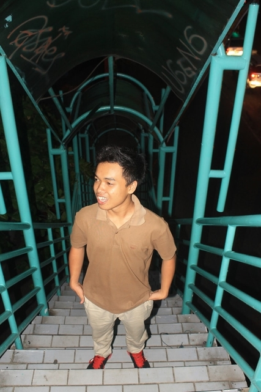
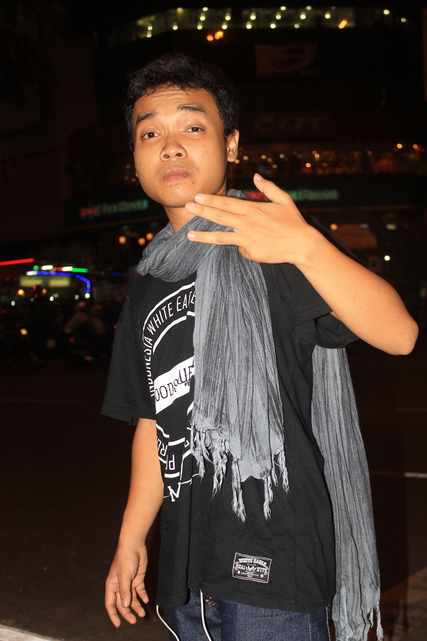

CURRICULUM VITAE
---
RESTA BAYU
---
Home
Biodata
Pengalaman
Kompetensi
Galeri
Kontak
☰
Galeri
 
Upload Foto
Quotes
Teman bermain diperankan oleh perangkat digital, playlist andalan bagai ayat-ayat dalam do'a
Blog
Mengenal Format File Musik DSD "Apakah Kualitasnya Sebesar Ukurannya ?"
Apple Fanboy Rela Jual Ginjal Demi Beli Iphone X
Bambang Purnomosidi "Linux Lebih Baik daripada Windows ?"
Mahasiswa IT Hack Database Kampus Demi Sesuap Nasi
Kelakukan Anak IT Jaman Now Yang Bikin Miris !